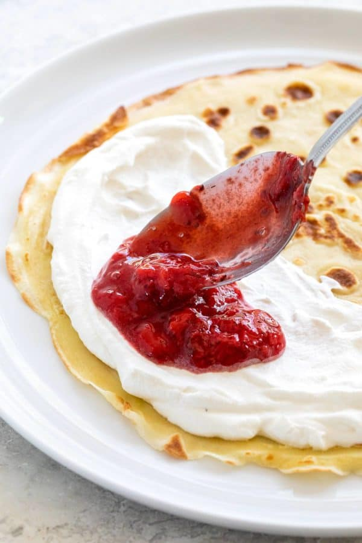
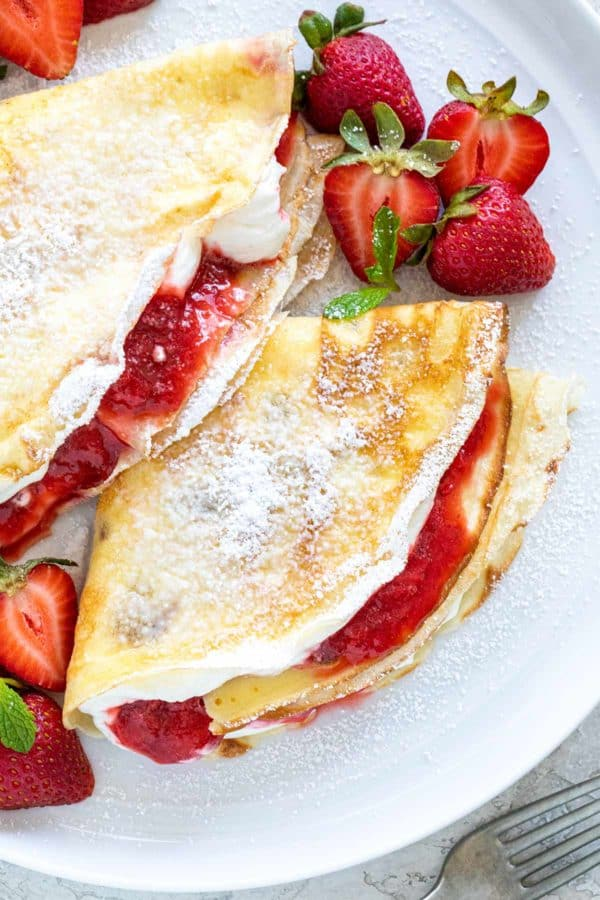
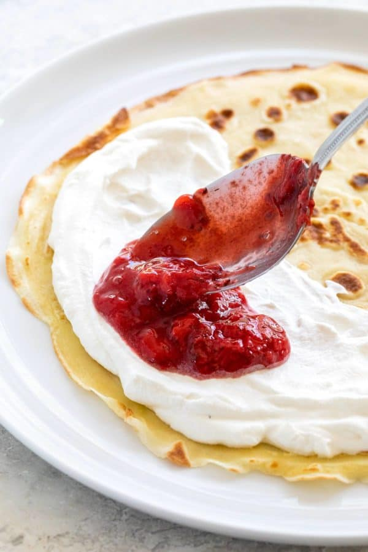
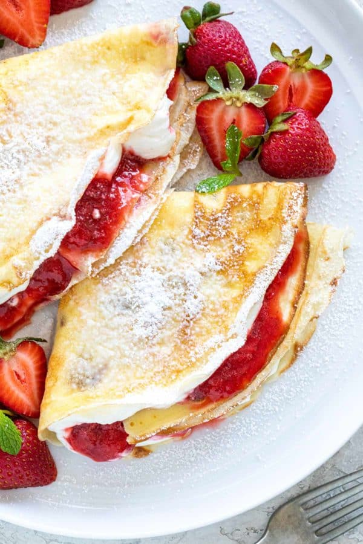

Instruction
- Set the oven rack to the middle position. Preheat to 350ºF (177ºC).
- In an 8 by 8-inch square pan, place two 8-inch wide pieces of foil in the pan perpendicular to each other to create a sling. Press down on the sides and corners to ensure that the foil is flush with the pan. There should be some overhang on the sides.
- IGrease the foil with cooking spray.
- In a small bowl, heat the bittersweet and unsweetened chocolate for 2 minutes in the microwave on 50% power. This will just begin to melt the chocolate.
- Add slices of butter to the chocolate, stir to roughly combine.
- Microwave at 50% power in 30-seconds increments, stirring after each duration until the mixture is completely melted and combines. About 1 ½ to 2 minutes.
- Whisk the cocoa powder into the chocolate mixture until smooth.
- Allow the chocolate mixture to cool to 95ºF (35ºC) and below to prevent the eggs from curdling.
- In a large bowl whisk together the sugar, eggs, vanilla, and salt until combined and smooth.
- Whisk in the cooled chocolate mixture into the sugar mixture.
- Gently fold the flour into the sugar mixture until no flour pockets remain, do not overmix the batter.
- Evenly spread the brownie batter into the greased baking pan.
- Bake until a toothpick inserted into the center comes out with just a few crumbs attached, 30 to 35 minutes. Rotate the pan halfway through baking.
- Completely cool the brownies inside the pan placed on a wire rack, about 1 ½ to 2 hours.
- Use the foil sling to carefully lift and remove the brownie from the tray. Discard the foil and cut 16 individual pieces.
Mini Tiramisu Trifles
Mini Tiramisu Trifles with a layer of mascarpone cheese, ladyfingers and espresso! A delicious,
easy & fun way to enjoy tiramisu & trifle at the same time!
Ingredients:
- 20 oz (565g) mascarpone cheese
- 3 tbsp (39g) sugar
- 1 cup (240ml) heavy whipping cream, cold
- 1/2 cup (58g) powdered sugar
- 1 tsp vanilla extract
- 3/4 cup (180ml) hot water
- 3 tbsp (45ml) instant espresso powder
- 3 tbsp (39g) sugar
- 36 lady fingers
- 1/2 cup (120ml) heavy whipping cream
- 1/4 cup (29g) powdered sugar
- 2 tbsp (30ml) kahlua
Instruction
- Mix mascarpone cheese and sugar together until combined. Do not over mix or the mascarpone cheese can thin out. Set aside.
- IIn another bowl, add the heavy whipping cream, powdered sugar and vanilla extract and whip until stiff peaks form.
- Carefully fold the whipped cream into the mascarpone cheese mixture. Set aside.
- In another bowl, combine the hot water, espresso powder and sugar.
- To layer the trifles, dip the ladyfingers into the espresso mixture one at a time and place into the bottom of the trifle cup. Use two to three ladyfingers and break into pieces as needed so they fit in the cup and create a full layer.
- Pipe or spoon a layer of mascarpone filling on top of the ladyfingers.
- Repeat another layer of ladyfingers and mascarpone filling.
- After completing the trifles, make the whipped cream.
- Add the heavy whipping cream, powdered sugar and kahlua to a large mixer bowl and whip until stiff peaks form.
- Pipe a swirl of whipped cream on top of each trifle, then sprinkle with cocoa powder, if desired.
- Refrigerate trifles until ready to serve. Trifles are best for 2-3 days.


Strawberry Crepes
Easy to make strawberry crepes served with a fresh compote sauce and paired with a generous helping of homemade whipped cream.
Ingredients:
Crepes
- 1 cup all-purpose flour
- 1 tablespoon granulated sugar
- ⅛ teaspoon kosher salt, or table salt
- 2 large eggs
- ¾ cup whole milk
- ¾ cup water, room temperature, divided
- 1 teaspoon vanilla extract
- 2 tablespoons unsalted butter, plus more for cooking
- ½ teaspoon kosher salt
- 4 cups strawberries, fresh or frozen
- ¼ cup orange juice
- ¼ cup granulated sugar
- 1 ½ cups heavy cream
- 6 tablespoons powdered sugar
- ¾ teaspoon vanilla extract
- mint leaves, for garnish
- powdered sugar, for dusting
- In a medium bowl, whisk together the flour, sugar, and salt.
- In a separate medium bowl, whisk the eggs. Add the milk, ½ cup water, and vanilla extract, whisk to combine.
- Microwave the 2 tablespoons of butter on high power in 30-second intervals until just melted, stirring to dissolve any pieces. It should not be above 140ºF (60ºC) when added to the batter, or the eggs will curdle.
- Make a well in the flour mixture. Add the melted butter. Gradually add the liquid egg mixture, constantly whisking until a smooth batter forms. Alternatively, in a blender, add the eggs, milk, ½ cup water, flour, salt, and melted butter. Blend on medium speed until smooth, about 40 to 45 seconds.
- Strain the batter into a medium bowl to remove any clumps. Cover and refrigerate for 1 hour.
- Once the batter has chilled, whisk in about ¼ cup of water to thin out the consistency. It should be similar to cream in texture.
- Heat a 10-inch nonstick skillet over medium heat for 1 minute. Add ½ teaspoon butter, swirling to coat the pan. When melted, wipe the excess with a paper towel. There should be a thin film left in the pan.
- Add a ¼ cup (60ml) of the batter to the 6 o’clock position of the skillet. Moving quickly, lift the skillet, tilt it slightly to spread the batter, and then swirl the skillet several times in a circular motion to evenly cover the entire bottom. Fill any holes with batter as needed.
- Place the pan back over the heat. Cook until the edges pull away from the skillet and lightly brown underneath, about 45 seconds to 1 minute. Use a spatula to loosen from the pan, use either your fingers or spatula to flip over and cook until the bottom sets, about 10 to 30 seconds. Transfer the crepe onto a plate.
- Stack the crepes on top of each other to keep warm while making the next batch, loosely covered with foil. Cook the remaining batter, wiping the pan clean and adding a thin layer of butter onto the pan between each crepe
- For fresh strawberries, remove the stems and cut them in half. Cut into smaller pieces if you don’t have a masher. Place the berries, orange juice, and granulated sugar in a medium saucepan over medium heat.
- When the mixture starts to bubble, reduce the heat to medium-low and use a potato masher to break down the pieces.
- Continue to cook over medium-low heat, mashing every few minutes, until a slightly chunky consistency is reached, about 10 to 15 minutes. Reduce the heat if needed to maintain a simmer.
- Turn off the heat and check the sweetness. Add more sugar to taste. Allow it to cool down until warm before adding to crepes.
- Refrigerate a large metal bowl and whisk for 15 minutes before making the whipped cream to help it whip faster. This step can be skipped, but the process may take slightly longer.
- Add the heavy cream, powdered sugar, and vanilla to the bowl. Slightly tilt the bowl and vigorously whisk until the desired peak stiffness is reached. The consistency should be smooth with no lumps or graininess.
Strawberry Sauce
Whipped Cream
Instruction
Strawberry Sauce
Whipped Cream
To Serve
Add a few dollops of whipped cream over half of the crepe. Spread about ⅓ cup of the strawberry sauce on top. Fold the crepe in half, then fold in half again to create a fan shape. Dust with powdered sugar, garnish with fresh mint and serve immediately.
 


